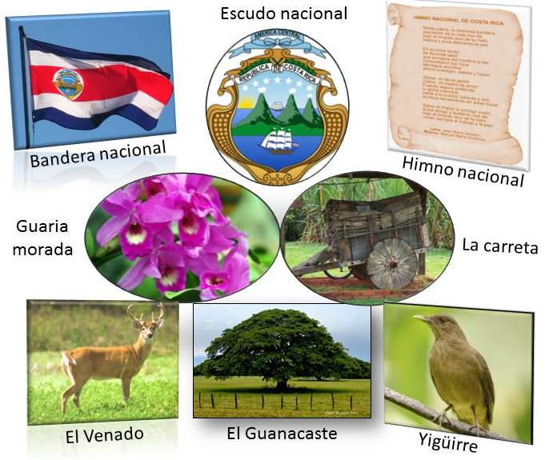
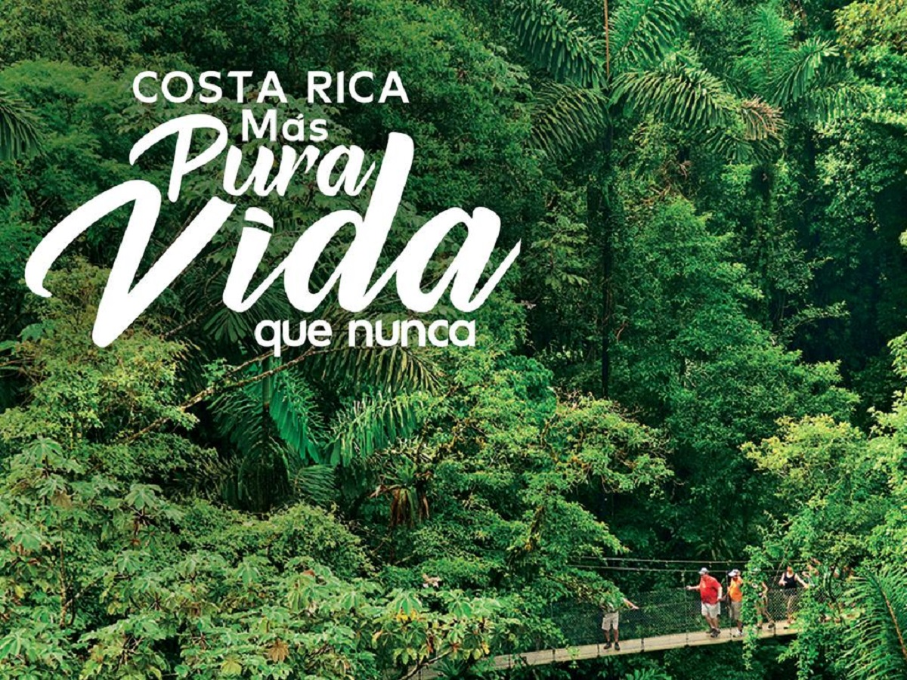

Provincias de Costa Rica
1. San José
2. Alajuela
3. Cartago
4. Heredia
5. Guanacaste
6. Puntarenas
7. Limón
Historia de Costa Rica
El descubrimiento de Costa Rica
Según la historia, Cristóbal Colón desembarcó en una pequeña isla situada por Limón en 1502, y fue así como “descubrió” Costa Rica. Bueno, eso es lo que dice la historia española, pero no es en realidad lo que sucedió en este episodio de la historia de Costa Rica. En 1502, Cristóbal Colón desembarcó un poco perdido en Limón. ¡Y Costa Rica lo descubrió! Costa Rica ya existía. Costa Rica descubrió a los europeos en 1502. Limón se convirtió en el primer asentamiento español en la región, y en 1522 los colonos nombraron la tierra Costa Rica. Todo con la esperanza de que iban a encontrar oro en sus colinas, pero no lo hicieron. Cuando se hizo evidente que la costa rica era más pobre que sus vecinos, los colonos cambiaron su enfoque al desarrollo agrícola.
Plantación de bananos
Como los terratenientes eran bastante pobres y aislados de los centros coloniales españoles de México, Guatemala y los Andes, y porque había muy poca mano de obra indígena para ayudar, los primeros colonos costarricenses pronto se convirtieron en una sociedad agraria autónoma e individual. A principios del siglo XIX, el cultivo de los plátanos trajo mucha riqueza, y el café pronto siguió los pasos.
Día de la Independencia
Día de la Independencia es una parte importante de Costa Rica Historia. El 15 de septiembre de 1821, después de la guerra por la independencia de México, las autoridades de Guatemala declararon la independencia de todas las provincias de Centroamérica. Hoy en día, del Día de la Independencia todavía se celebra el 15 de septiembre.Aunque técnicamente, bajo la Constitución española de 1812, luego adoptada en 1820, Costa Rica y Nicaragua se habían convertido en una gran provincia autónoma con León como capital. Luego, en 1838, Costa Rica se declaró soberana.
Costa Rica Historia y el camino hacia la democracia
Estos eventos seguidos de una era de paz y prosperidad. Hasta 1917, cuando el General Federico Tinoco Granados gobernó como un dictador militar durante dos años. Más tarde, en 1948, Jose Figueres inició una guerra civil en la que murieron 2.000 personas; la guerra sólo duró 44 días y fue el evento más sangriento jamás a tener lugar en Costa Rica. La junta victorioso, sin embargo, dio lugar a una constitución que dio paso a elecciones libres por sufragio universal y la abolición total del ejército. Figueres se convirtió en un héroe nacional cuando Costa Rica disolvió su ejército en 1949. Desde ese día, Costa Rica ha tenido 16 elecciones presidenciales democráticas.
Símbolos Patrios
-

Bandera
El Pabellón de Costa Rica esta formado por cinco fajas colocadas horizontalmente, una roja en el medio donde llevará el Escudo Nacional y al lado de esta una blanca a cada lado y una azul en los extremos superior e inferior. La fajas azules y blancas todas serán de la misma anchura, sólo la roja, de doble ancho.
Escudo
El Escudo de Nacional de Costa Rica, representa tres volcanes y un extenso valle entre dos océanos y en cada uno de éstos un buque mercante.
En el extremo izquierdo de la línea superior que marca el horizonte habrá un sol naciente. Cierran el escudo dos palmas de mirto, unidas por un cinta ancha de color blanco que contiene en letras doradas la leyenda: REPUBLICA de COSTA RICA, en letras negras.
El espacio entre en perfil de los volcanes y las palmas de mirto lo ocupan siete estrellas de color blanco de igual magnitud, colocadas en arco y representan las provincias de: San José, Alajuela, Cartago, Heredia, Guanacaste, Puntarenas y Limón.
El remate del escudo lo forma una cinta azul en forma de corona en la cual en letras plateadas figura la leyenda: AMERICA CENTRAL, en letras mayúsculas.
La parte exterior del escudo es un marco de madera con tres filas de granos de café que representan las tres cordilleras.
Ave Nacional (Yugüirro)
El Yigüirro: (Turdus grayi) fue declarada ave nacional como un tributo a su canto potente y melodioso que acompaña la entrada de la época lluviosa. El proponente de la idea fue Elíseo Gamboa Villalobos.
Árbol Nacional (Guanacaste)
El árbol de Guanacaste fue declarado como el árbol nacional de Costa Rica el 31 de agosto de 1959, durante el gobierno de Mario Echandi Jiménez. Fue escogido como homenaje a los guanacastecos, por su Anexión del Partido de Nicoya al país en 1824.
Flor Nacional (Guaria Morada)
La Guaria Morada es la flor nacional de Costa Rica. Es una orquídea que representa muy bien la belleza natural del país. Años atrás era común que se plantara y se encontrara fácilmente en los jardines de las casas, por lo que declaró símbolo patrio.
Venado de Cola Blanca
El venado cola blanca fue declarado Símbolo Nacional Patrimonio de la Fauna Natural Costarricense, durante la presidencia de José María Figueres Olsen, el 2 de mayo de 1995, por medio de la ley número 7497.
La Carreta
La carreta proclama la sencillez y aspiraciones de una Costa Rica rural y artesana. Uno de los símbolos nacionales es la carreta, símbolo del trabajo costarricense. Los Símbolos Nacionales, son los emblemas que representan el espíritu esforzado del pueblo costarricense, pacífico, amante de la paz y la democracia.
Himno Nacional de Costa Rica
LETRA
Noble patria, tu hermosa bandera,
expresión de tu vida nos da;
bajo el límpido azul de tu cielo
blanca y pura descansa la paz.
En la lucha tenaz de fecunda labor
que enrojece del hombre la faz,
conquistaron tus hijos -labriegos sencillos-
eterno prestigio, estima y honor (bis).
¡Salve, oh tierra gentil!
¡Salve, oh madre de amor!.
Cuando alguno pretenda tu gloria manchar,
verás a tu pueblo, valiente y viril,
la tosca herramienta en arma trocar.
¡Salve, oh patria!, tu pródigo suelo,
dulce abrigo y sustento nos da;
bajo el límpido azul de tu cielo,
¡vivan siempre el trabajo y la paz!
¿Quieres visitar Costa Rica? Te dejamos una guía de turismo en la que puedes consultar la amplia gama de lugares que puedes conocer.
Has clic aquí.
-
